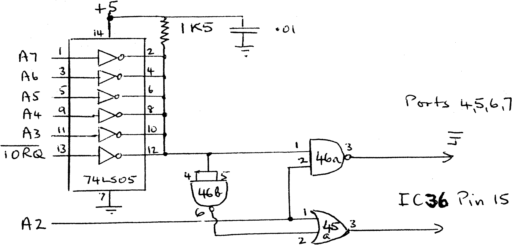

80-Bus News |
March–April 1983 · Volume 2 · Issue 2 |
| Page 45 of 55 |
|---|
cure his problem. Not because I think that Mr. Thornton would have refused as a last resort, but because it was our fault that we supplied inappropriate gear through not enquiring too closely, and the best way to keep customers is to treat them nicely and not to trap them into spending more money than they need to.
Anyway Mr. Thornton was very nice about it, and we made several suggestions as to how to cure the problem for a few pence rather than pounds. I received a letter from Mr. Thornton a couple of weeks back and I reproduce his solution here.
The port decode on the Nascom 1 only looks at the bottom three address lines, giving a total of eight ports. Port 0 is used for the keyboard, ports 1 and 2 for the UART, ports 4, 5, 6, and 7 for the onboard PIO. Port 3 is unused.
No problem, just so long as you don’t use a port address like 11H or 81H or B1H for something else. Any access to those ports will switch on the UART. This is because the onboard decode doesn’t care what the high address lines are up to, if any of the bottom three address lines is active with IORQ, then something on the main board will be switched on as well. A link is provided on the board (IOEXT) to allow an external board to provide a full decode. Unfortunately someone at Nascom slipped up in this area of the design, and this link does not provide the correct function.
One can get away with some non critical applications combinations, for instance always writing to the conflicting ports, but one particular combination which can’t be mixed is the Henelec/Gemini G805 disk controller and the Gemini GM812 intelligent video card. The IVC uses ports B1H, B2H and B3H, and consequently does fascinating and unpredictable things to the UART. What it doesn’t do is put pictures on the screen.
There are several solutions; the easiest is to use the Nascom I/O board to feed the G805, but it is expensive. Further, a method was published which requires a bit of board surgery and allows a signal put on IOEXT to take control. (See D. Ritchies letter in INMC4). However, as any board running off the NASBUS will provide its own decode all that is necessary is to make the onboard decodes unambiguous. In other words to lock out the ports on the Nascom 1 when any higher address line is active. This can be done with one extra chip and without board surgery. If you have a dual monitor board the circuit can be wired on to a 24 pin header, picking up most of the lines required and leaving only one connection to be soldered to the main board.
| Page 45 of 55 |
|---|